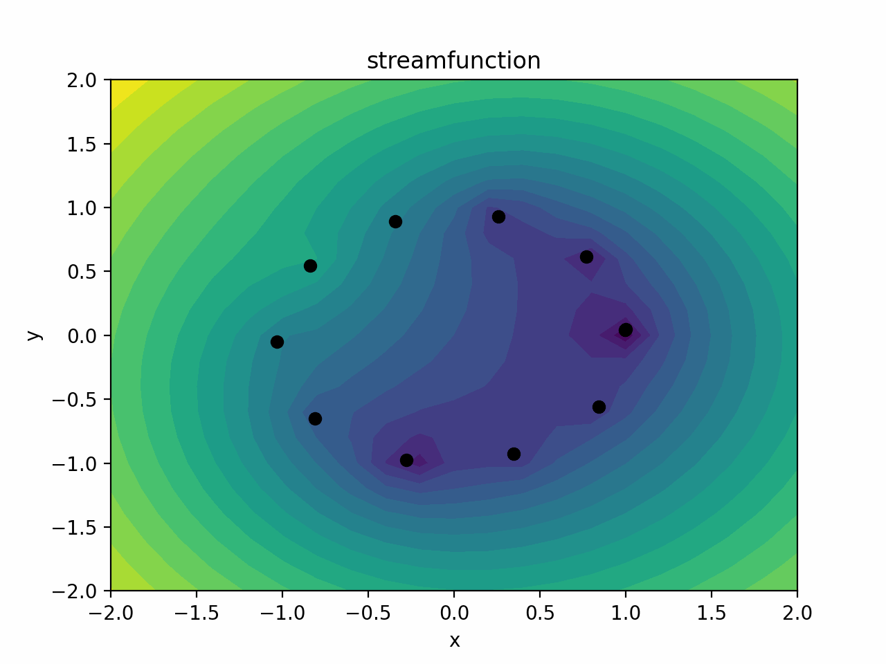

This website is still under construction!
I am currently pursuing a PhD at Imperial College London, under the supervision of Prof. Dan Crisan. My research focuses on the approximation of solutions of Stochastic Partial Differential Equations (SPDEs) by interacting particle systems. I am also affiliated with the Mathematics for our Future Climate Center for Doctoral Training (MFC CDT), which is a joint program with the University of Reading and the University of Southampton. This is my Imperial profile.
You can contact me at f.giovagnini23@imperial.ac.uk
Here is my first preprint: https://arxiv.org/abs/2410.23163v1
In the following animation you will see 11 point vortices that move following a deterministic differential equation (in black), and the same 11 point vortices moving following a stochastic differential equation (in red).
